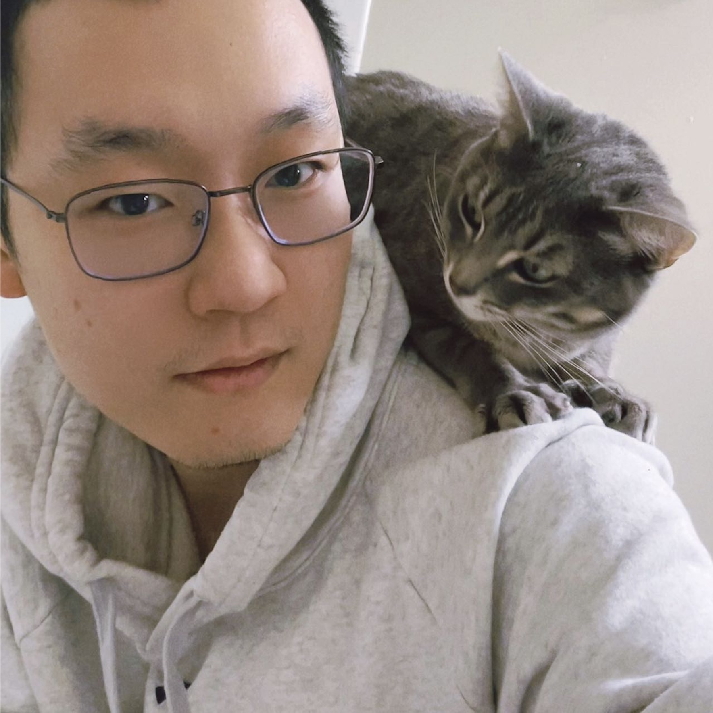

Ph.D. Student
Yale University
chen.liu.cl2482 at yale.edu
New Haven, CT and Mountain View, CA.
 Google Scholar
Google Scholar
 Twitter
Twitter
 LinkedIn
LinkedIn
 GitHub
GitHub
Chen Liu
Hi, my name is Chen Liu.
I am looking for a research internship (Summer 2025). Please let me know if you have opportunities in spatial-temporal modeling, multimodal learning, self-supervised learning, manifold learning, AI in healthcare, or related fields.
I am 3 years into my Ph.D. program in computer science at Yale University, advised by Prof. Smita Krishnaswamy. I received my M.S. from Columbia University, and I did my undergraduate studies at a liberal arts college, Bucknell University.
My research spans the theory and application of machine learning. On the theory side, I focus on helping neural networks learn better representations in the latent space, and one of my most recent work focus on modeling spatial-temporal dynamics in irregularly-sampled image series. On the application side, I extend my research to medical imaging, proteomics and other biomedical data.
Prior to pursuing my PhD, I worked at a startup company named Matic on computer vision and SLAM. Then I worked as a senior research scientist at GE Healthcare, on deep learning in medical imaging applications.
News
[07/2024] I wrote a tool to generate your Google Scholar Citation World Map [Report] [Code].
[06/2024] My first PhD project, CUTS, has been accepted to MICCAI 2024 [Paper] [Code] [MICCAI] [Poster].
[01/2024] Our paper on entropy and MI for deep neural networks has been accepted to an ICML 2023 Workshop and an IEEE Information Theory conference (CISS) [Paper] [Code] .
[08/2022] Started my PhD program at Krishnaswamy Lab, Yale University.
[06/2022] Recognized as an Outstanding Reviewer at ICML 2022 .